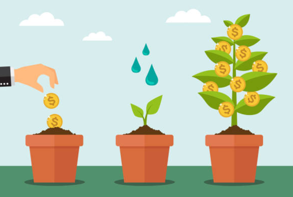
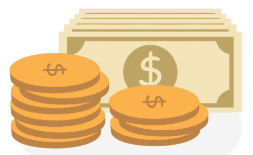
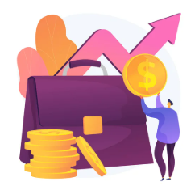

Como hemos visto, invertir es como sembrar una semilla: con los cuidados adecuados, crecerá y dará frutos. En el mundo de las finanzas, las inversiones son productos que te permiten participar en el crecimiento de empresas, gobiernos u otros proyectos.

Los pilares de la inversión
- Liquidez: Se refiere a la facilidad con la que puedes convertir tu inversión en dinero efectivo. Es como tener tu dinero en el bolsillo, pero en lugar de billetes, tienes acciones, bonos u otros activos.

- Riesgo: Toda inversión conlleva un cierto grado de incertidumbre. El riesgo es la posibilidad de perder parte o todo el dinero invertido.
- Rentabilidad: Es la ganancia que obtienes por tu inversión. A mayor riesgo, mayor potencial de rentabilidad, pero también mayor posibilidad de pérdida.

¿Cómo elegir la inversión adecuada?
La elección de una inversión depende de tu perfil de inversor. Este perfil se define por tu tolerancia al riesgo, tu horizonte temporal (cuánto tiempo quieres mantener tu dinero invertido) y tus objetivos financieros.
- Inversores conservadores: Prefieren inversiones seguras con baja volatilidad, como los bonos del gobierno o los depósitos a plazo fijo.
- Inversores moderados: Buscan un equilibrio entre riesgo y rentabilidad. Suelen invertir en una combinación de acciones, bonos y fondos de inversión.
- Inversores agresivos: Están dispuestos a asumir un mayor riesgo a cambio de una mayor rentabilidad. Invierten principalmente en acciones de empresas en crecimiento o en mercados emergentes.